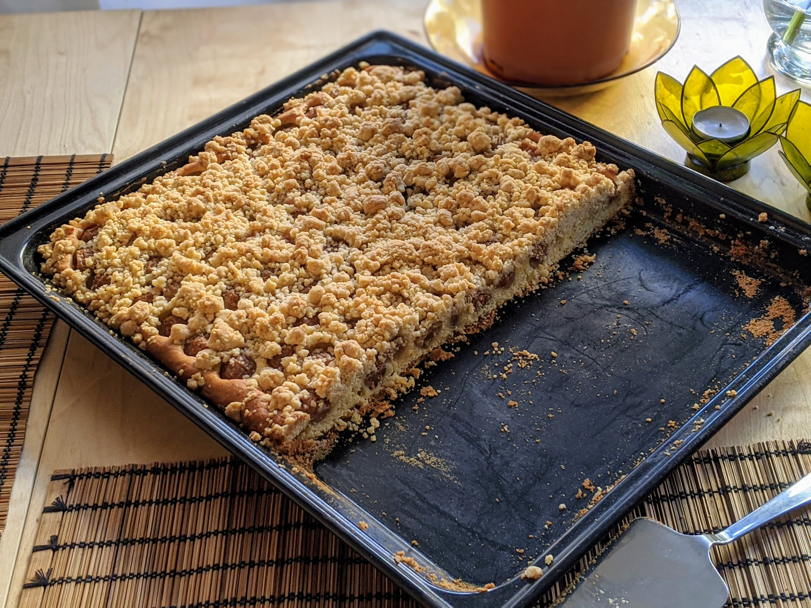

Blechkuchen

Ici avec des cerises
Pour 15-20 personnes :
- Un kilo de fruits, par exemple des cerises
- 700g de farine
- 450g de beurre ramolli
- 150g de sucre
- Un sachet de sucre vanillé
- Une pincée de sel
- 5 œufs
- Un citron bio
- Un sachet de levure chimique
- Deux cuillères à café de cannelle
- Mélanger 250g de beurre avec 50g de sucre, le sucre vanillé et le sel. Ajouter les œufs un à un, il faut que ça fasse de la mousse.
- Laver et zester le citron. Ajouter le zeste au mélange, ainsi que la moitié du jus.
- Mélanger la moitié de la farine avec la levure chimique, puis l'ajouter au mélange doucement en mélangeant continuellement jusqu'à ce que ça fasse une belle pâte. Ajouter un peu plus de farine si ça colle trop.
- Laver et beurrer une plaque de four. Disposer la pâte sur le dessus, puis préparer les fruits (les laver, les couper en bouts pas trop petits si besoin), et les ajouter sur la pâte avec le reste du jus de citron.
- Faire préchauffer le four à 180°C. Mélanger le reste du beurre (200g) avec le reste du sucre (100g) et la cannelle.
- Ajouter le reste de la farine (350g) dans ce mélange et malaxer pour former un crumble. Disposer le crumble par-dessus le gâteau.
- Enfourner 35-40 minutes, jusqu'à ce que le dessus du crumble et que les bords du gâteau commencent à dorer. Servir une frois refroidi.
Remarque : si on utilise des fruits acides type cerises griottes, utiliser 150g de sucre à l'étape 1 et 150g de sucre à l'étape 5 ; et ne pas utiliser de jus de citron, le zeste suffit.
Retour à la liste des recettes